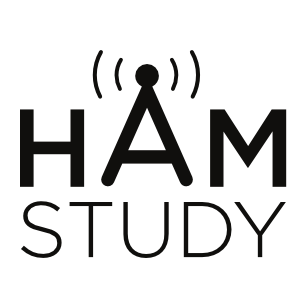

Buckingham County 2m Net@ 147.550 MHz FMAboutInfoThe net meets on Tuesdays, Thursdays, and Saturdays at 8 PM on 147.550 MHz FM. The net frequency can also serve as a county wide simplex throughout the day. On off days @ 8PM there will be a round table of info sharing with no Net Control. This excludes Sundays. Net Control Operator(s)Members
Becoming a MemberExtra Stuff!!!For information on the American Radio Relay League (ARRL), a nationwide ham radio organization, PLEASE visit: ARRL To study for the ham radio license, Please Visit: HamStudy |